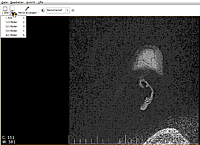
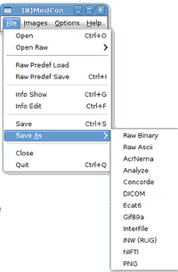
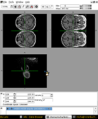
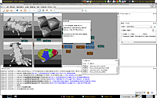

DICOM
Zum Verständnis dieses Artikels sind folgende Seiten hilfreich:
DICOM (Digital Imaging and Communications in Medicine), auf deutsch "Digitale Bildgebung und Kommunikation in der Medizin", stellt mittlerweile den Standard für den Austausch von Bildinformationen in der Medizin dar. Untersuchungen werden zumeist nicht mehr als Film- oder Papierausdruck, sondern digital auf CD mitgegeben und liegen dann im DICOM-Format vor. In der Regel wird der CD ein Betrachtungsprogramm (Viewer) beigefügt, der üblicherweise aber unter Linux nicht lauffähig ist.
med-imaging¶
Für den Gesamtbereich medizinischer Bildgebung gibt es das Metapaket med-imaging [1]:
med-imaging (universe)
 mit apturl
mit apturl
Paketliste zum Kopieren:
sudo apt-get install med-imaging
sudo aptitude install med-imaging
Enthalten sind u.a.
Aeskulap, DICOM Viewer
Amide für 3D-Rekonstruktionen
Dcmtk OFFIS DICOM toolkit zum Konvertieren von Dateien
Dicomnifti zum Konvertieren in das NIfTI-Format
Ginkgo CADx, kompletter DICOM-Viewer
ImageJ für Bildbearbeitung und Analyse
MedCon und (X)MedCon zum Konvertieren von DICOM Dateien
Für Zwecke der medizinischen Befundung sind die entsprechenden speziellen Anforderungen an die Bildschirme "Befundungsmonitor" zu beachten.
Bilder betrachten (Viewer)¶
Möchte man sich diese Bilder lediglich anschauen können, benötigt man einen DICOM-Betrachter. Es gibt eine Vielzahl von Programmen zum Betrachten von DICOM-Bildern auch für Linux, mit denen alle Bilder hintereinander eingeladen und angezeigt werden können. Auch GIMP kann verwendet werden.
dcm4che¶
Wer einfach nur die DICOM Bilder auf seiner CD (oder einem Verzeichnis) ansehen möchte, ist vermutlich bei dcm4che gut aufgehoben.
Das Programm ist allerdings nicht in den Paketquellen, sondern muss von dcm4che  unter "Files->dcm4che3" heruntergeladen und entpackt werden. (Wer es selbst kompilieren möchte kann den Quelltext von github beziehen: https://github.com/dcm4che/dcm4che)
unter "Files->dcm4che3" heruntergeladen und entpackt werden. (Wer es selbst kompilieren möchte kann den Quelltext von github beziehen: https://github.com/dcm4che/dcm4che)
Hinweis!
Fremdsoftware kann das System gefährden.
Nach dem Entpacken kann man mit einem Doppelklick auf viewer-linux.sh das Programm ausführen. Anschließend kann man unter "File -> Import" direkt die DICOM Dateien von einer CD oder einem Verzeichnis anzeigen lassen.
Aeskulap¶
|  |
| Aeskulap |
Im Metapaket med-imaging enthalten oder als Einzelpaket installierbar [1]:
aeskulap (universe)
mit apturl
Paketliste zum Kopieren:
sudo apt-get install aeskulap
sudo aptitude install aeskulap
Das Programm ist dann unter "Graphik -> Aeskulap Betrachter" zu finden.
Die Funktionen "Suchen" und "Filter löschen" setzen voraus, dass ein "DICOM Dir" vorhanden ist, ein Verzeichnis, in welchem (Patienten) Daten registriert sind.
Mit dem Menüpunkt "Dicom Dir" wird nach genau solchen Dateien gesucht, z.B. auf einer CD.
Der Menüpunkt "Öffnen" erlaubt, direkt Dateien zu finden, allerdings sucht das Programm standardmäßig nach "Dicom.dir", so dass man den voreingestellten Filter von "Dicom Dateien" auf "Alle Dateien" umstellen muss. Durch Auswahl aller Einzelbilder wird eine Serie komplett eingeladen und kann durchgeblättert werden. Zoom und Heller/Dunkler Funktionen sind implementiert.
Ginkgo CADx¶
Das Programm Ginkgo CADx  ist im Metapaket med-imaging enthalten oder kann einzeln installiert werden [1]:
ist im Metapaket med-imaging enthalten oder kann einzeln installiert werden [1]:
ginkgocadx (universe)
mit apturl
Paketliste zum Kopieren:
sudo apt-get install ginkgocadx
sudo aptitude install ginkgocadx
Das Programm ist dann unter "Sonstiges -> Ginkgo Dicom" zu finden. Das Programm ist einfach zu bedienen und bietet einen kompletten DICOM-Viewer mit einem Funktionsumfang, der OsiriX nahe kommt.
Volle DICOM-Image Darstellung
3D-Rekonstruktionen
Komplettes Set mit Bearbeitungswerkzeugen (Ausmessen, Winkel, HE-Werte, Markieren, Text, ...)
Dicom-Datensatz-Erstellung für JPEG, PNG, GIF und TIFF
Unterstützung von elektronischen Krankenblättern (HL7 Standards, IHE-konform)
PACS-Workstation (C-FIND, C-MOVE, C-STORE...)
Erweiterbar für Spezialgebiete:
Oftalmologie (Retinal image mosaic composition, Automatic retinal analysis diagnostics)
Psoriasis Diagnostik
Bilder bearbeiten (Dekomprimieren und Konvertieren)¶
Standardmäßig liegen DICOM-Bilder in einem komprimierten Format und als Einzeldateien vor.
|  |
| (X)MedCon |
MedCon¶
(X)MedCon liegt in zwei Varianten vor. Hierzu müssen folgende Pakete installiert werden [1]:
medcon (universe, Kommandozeilenversion)
mit apturl
Paketliste zum Kopieren:
sudo apt-get install medcon
sudo aptitude install medcon
oder
xmedcon (universe, grafische Benutzeroberfläche, kann Dateien nur einzeln konvertieren)
mit apturl
Paketliste zum Kopieren:
sudo apt-get install xmedcon
sudo aptitude install xmedcon
Empfehlenswert ist die Kommandozeilenversion, da diese auch mehrere Dateien bearbeiten kann. Dieses Programm bietet u.a. die Optionen
| Optionen | |
| Parameter | Beschreibung |
-f | zum Lesen von Dateien |
-anon | zum Anonymisieren |
-c | zum Konvertieren |
-crop <x>:<y>:<w>:<h> | zum Beschneiden |
wobei x/y Bildkoordinaten links oben, w/h Breite und Höhe darstellen.
dcmdjpeg¶
Alternativ gibt es das Programm dcmdjpeg, enthalten in folgendem Paket [1]:
dcmtk (universe)
mit apturl
Paketliste zum Kopieren:
sudo apt-get install dcmtk
sudo aptitude install dcmtk
Im Terminal [4] muss dann der Befehl in folgender Syntax ausgeführt werden:
dcmdjpeg [OPTIONEN] dcmfile-in dcmfile-out -f * ??
In normale Bildformate konvertieren¶
Dadurch gehen natürlich außer dem reinen Bild alle weiteren Informationen wie Patientendaten, technische Parameter usw. verloren.
in das PNG-Format umwandeln:
medcon -c png -f DATEI
Konvertieren in DICOM-NIfTI-Format¶
Mit MedCon:
medcon -c nifti -f *
Alternativ kann man das Programm DICOM to NIfTI Converter einsetzen. Folgendes Paket wird benötigt:
dicomnifti (universe)
mit apturl
Paketliste zum Kopieren:
sudo apt-get install dicomnifti
sudo aptitude install dicomnifti
Die Syntax lautet:
dinifti ORIGINALDATEI AUSGABEDATEI
Bildbearbeitung und Analyse¶
3D-Stapel erzeugen¶
Möchte man aus einer Bilderserie dreidimensionale Rekonstruktionen vornehmen, d.h. verschiedene Bildebenen des Datensatzes anschauen (siehe auch MacroFusion), müssen die einzelnen DICOM-Bilder in einen 3D-Stapel zusammengeführt werden. Dazu kann man wiederum MedCon in der Kommandozeilenversion einsetzen:
medcon -f * -c dicom -stack3d -n -qc
ergibt DATEINAME-STACKS.dcm [4]
medcon -c nifti -f DATEINAME-STACKS.dcm
ergibt einen Stapel DATEINAME-STACKS.nii im NIfTI-Format. Siehe auch die MedCon Dokumentation .
3D-Rekonstruktionen vornehmen¶
Amide¶
Amide steht für "Advanced Medical Imaging Development" und ist auch als einzelnes Paket installierbar [1]:
amide (universe)
mit apturl
Paketliste zum Kopieren:
sudo apt-get install amide
sudo aptitude install amide
Das Programm ist zu finden unter "Graphik -> Amide" und erlaubt ROI-Auswertung, Beschneiden, Volumenrendering sowie Stereoskopie.
FSLView¶
|  |
| FSLView |
FSLView findet sich in den offiziellen Paketquellen und ist im genannten med-imaging-Paket enthalten, kann aber auch als einzelnes Paket installiert [1] werden:
fslview (universe)
mit apturl
Paketliste zum Kopieren:
sudo apt-get install fslview
sudo aptitude install fslview
Benötigt Dateien im NIfTI-Format als Stapel (Stack). Da diese meist nicht standardmäßig vorliegen, müssen die o.g. Umwandlungen vorgenommen werden.
Slicer¶
Slicer enthält eine ausführliche Anleitung mit Demodatensätzen und zahlreiche Erweiterungen. Von der Webseite kann für Linux ein .tar.gz-Archiv für 64-bit-Versionen heruntergeladen werden.
Hinweis!
Fremdsoftware kann das System gefährden.
Nach Entpacken [5] kann das Programm durch Doppelklick auf slicer im entpackten Verzeichnis gestartet werden. Es empfiehlt sich, einen Menüeintrag anzulegen. Die Programmoberfläche ist Englisch.
|  |
| MeVisLab |
MeVisLab¶
Von MeVisLab kann als selbstextrahierendes Archiv ausschließlich für 64-bit-Systeme als MeVisLabSDK-VERSION.bin herunter geladen werden (ca. 800 MiB). Laut Hersteller wurde das Programm unter Ubuntu 12.04 getestet. Dies Programm ist offenbar vornehmlich für Entwickler gedacht. Bilder können über das Modul "Dicomimport" hinzugefügt werden. Das Programm verfügt über einen eigenen Installer und einen eigenen Uninstaller, der sauber aufräumt.
Hinweis!
Fremdsoftware kann das System gefährden.
Diese Installationsdatei muss ausführbar gemacht werden[6]
chmod u+x MeVisLabSDK*.bin
und wird anschließend ausgeführt mit
./MeVisLabSDK*.bin
- Erstellt mit Inyoka
-
 2004 – 2017 ubuntuusers.de • Einige Rechte vorbehalten
2004 – 2017 ubuntuusers.de • Einige Rechte vorbehalten
Lizenz • Kontakt • Datenschutz • Impressum • Serverstatus -
Serverhousing gespendet von